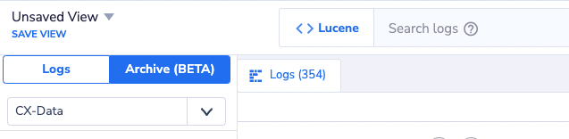
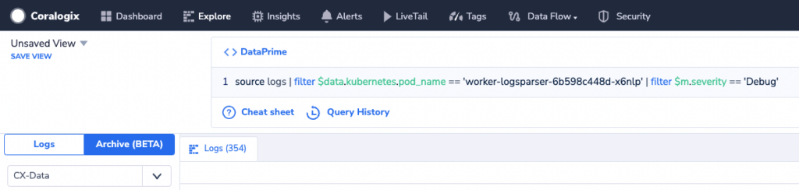
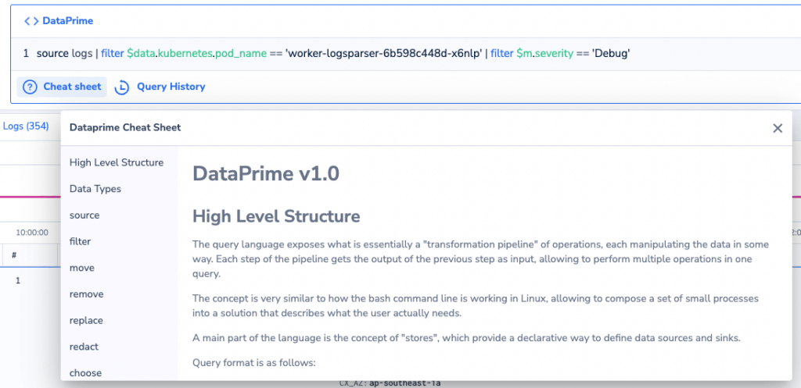

DataPrime Query Language
DataPrime is Coralogix's next-generation query and data discovery language. It's a piped language that provides users with a simple yet powerful way to describe event transformations and aggregations. The balance between simplicity and power is achieved by having a rather small set of idioms that encapsulate event structure transformation while supporting the use of standard JavaScript expressions to describe value transformations.
DataPrime is currently enabled to 'Explore' your logs in archive mode. To query your archive with DataPrime, enable the CX-Data format bucket.
Overview
Use our innovative DataPrime syntax language not only to query your data, but transform it using a series of operations in a manner that it meaningful for you.
Use DataPrime to:
-
Calculate. Take a set of data and filter on top of it.
-
Extract. Apply logic to unstructured data and transform it into calculable numbers.
-
Aggregate. Generate new analytics for your business.
-
Transform Data. Transform data with functions creating new fields or replacing existing ones.
The language operates in a manner similar tothe bash command linein Linux, allowingthe userto compose a set ofsmallprocesses to achieve a particular goal.
QueryFormat
Queryformat is asfollows:
source logs | operator ... | operator ... | operator | ...
Anywhitespacebetweenoperators is ignored, allowingyouto write queries as readable, multiline queries. For example:
source logs
| operator1 ....
| operator2 ....
| ...
DataTypes
Theseare the data types currently supported:
-
string -
number/num- A number (double or integer) -
boolean- A boolean type, withtrueorfalsevalues -
null- A null value -
timestamp- A UTC timestamp innanoseconds -
interval- A time span in nanoseconds
Language Constructs
All language constructs that are supported:
-
Constants: strings, numbers, booleans, regular expressions,
null -
Nestedfield access
-
Basicmath operations:
+,-,*,\,% -
Boolean operations:
&&,||,! -
Equalityand comparison:
==,!=,<,<=,>,>= -
Textsearch:
~,~~ -
Stringinterpolation
-
Timestampexpressionsandinterval literals
-
Castingan expression to a desired data type: e.g.
$d.temperature:number. Type inference is automatically applied whenpossibleto reduce the need for casting.
FieldAccess
Accessingnested data is done by using a keypath, similar to any programming language or json tool. Keys with special characters canbeaccessed using a map-like syntax, with the key string as the map index, e.g.$d.my_superkey['my_field_with_a_special/character'].
$m.timestamp
$d.my_superkey.myfield
$d.my_superkey['my_field_with_a_special/character']
$l.applicationname
StringInterpolation
-
`this is an interpolated {$d.some_keypath} string`-{$d.some_keypath}will be replaced with the evaluatedexpressionthat is wrapped by the brackets -
`this is how you escape \{ and \} and \``- Backward slash (\) is used to escape characters like{,}that are usedforkeypaths.
TextSearch
Booleanexpressionsfor text search:
-
$d.field ~ 'text phrase'- case-insensitive search for a text phrase in a specific field. -
$d ~~ 'text phrase'- case-insensitive search for a text phrase in$d.
Timestamp Expressions
Expressions prefixed by@are timestamp expressions and always return a timestamp. They can be either literals (@numberor@'string') which are validated at query compilation time, or dynamic expressions (@expression) which is evaluated at query runtime based on the expression's data type.
-
Numbertimestamp literals:
-
Seconds(10 digits), e.g.
@1234567890 -
Milliseconds (13 digits), e.g.
@1234567890123 -
Microseconds (16 digits), e.g.
@1234567890123456 -
Nanoseconds(19 digits), e.g.
@1234567890123456789
-
-
Stringtimestampliterals:
-
ISO8601 dates, e.g. `@'2023-08-07'
-
ISO8601 date/time, e.g.
@'2023-08-07T19:06:42' -
ISO8601 date/time with time zone, e.g.
@'2023-08-07T19:06:42+03:00'
-
-
Dynamicexpressions:
-
Numbersare interpreted as nanoseconds, e.g.
@($d.ts_millis * 1000000). -
Stringsare parsed to a timestamp on a best-effort basis, e.g.
@`2023-08-{$d.day}`. For extended and customizabletimestampparsing, seeparseTimestamp. -
Atimestampexpression of any other data type returns
null.
-
IntervalLiterals
Anintervalliteralrepresents a span of time in a normalized and human-readable format,NdNhNmNsNmsNusNnswhereNis the amount ofeachtime unit. The following rules apply:
-
It consists of time unit components - a non-negative integer followed by the short time unit name. Supported time units are:
d,h,m,s,ms,us,ns. -
There must be at least one time unit component.
-
The same time unit cannot appear more than once.
-
Components must be decreasing in time unit order - from days to nanoseconds.
-
It can start with
-to represent negative intervals.
TimestampMath
In additiontotimestamp expressions and interval literals, Dataprime supports math operations between them:
-
timestamp + interval: adds an interval to a timestamp -
timestamp - interval: subtracts an interval from a timestamp -
timestamp - timestamp: calculates the interval between two timestamps -
timestamp / interval: rounds a timestamp to the nearest interval -
interval + interval: adds two intervals together -
interval - interval: subtracts one interval from another -
interval * number: multiplies an interval by a numeric factor
ScalarFunctions
Variousfunctions canbeusedtotransformvalues. All functions can be called as methods as well, e.g.$d.msg.contains('x')is equivalent tocontains($d.msg,'x').
Returnsthe IPprefixof a given ip_address with subnetSize bits (e.g.:192.128.0.0/9).
UUIDFunctions
isUuid
isUuid(uuid: string): bool
-
interval(required) - the interval toformat. -
scale(optional) - the largesttime unitoftheinterval to show. Defaults tonano.
# Example:
limit 3 | choose formatInterval(now() - $m.timestamp, 's') as i
# Results:
{ "i": "122s261ms466us27ns" }
{ "i": "122s359ms197us227ns" }
{ "i": "122s359ms197us227ns" }
formatTimestamp
formatTimestamp(timestamp: timestamp, format: string?, tz: string?): string
Function parameters:
-
timestamp(required) - the timestamp to format. -
format(optional) -adate/time format specification forparsingtimestamps. The following format options are supported:-
'%Y-%m-%d'- print the date only, e.g.'2023-04-05' -
'%H:%M:%S'- print the time only, e.g.'16:07:33' -
'%F %H:%M:%S'- print both date and time, e.g.'2023-04-05 16:07:33' -
'iso8601'- print a timestamp in ISO 8601 format, e.g.'2023-04-05T16:07:33.123Z' -
'timestamp_milli'- print a timestamp in milliseconds (13 digits), e.g.'1680710853123'
-
-
tz(optional) - the destinationtime zoneto convert the timestamp before formatting
# Example 1: print a timestamp with default format and +5h offset
limit 1 | choose $m.timestamp.formatTimestamp(tz='+05') as ts
# Result 1:
{ "ts": "2023-08-29T19:08:37.405937400+0500" }
# Example 2: print only the year and month
limit 1 | choose $m.timestamp.formatTimestamp('%Y-%m') as ym
# Result 2:
{ "ym": "2023-08" }
# Example 3: print only the hours and minutes
limit 1 | choose $m.timestamp.formatTimestamp('%H:%M') as hm
# Result 3:
{ "hm": "14:11" }
# Example 4: print a timestamp in milliseconds (13 digits)
limit 1 | choose $m.timestamp.formatTimestamp('timestamp_milli') as ms
# Result 4:
{ "ms": "1693318678696" }
parseInterval
parseInterval(string: string): interval
Parses an interval from astringwith formatNdNhNmNsNmsNusNnswhereNis the amount of each time unit. Returnsnullwhen the input does not match the expectedformat.
# Example 1: parse a zero interval
limit 1 | choose '0s'.parseInterval() as i
# Result 1:
{ "i": "0ns" }
# Example 2: parse a positive interval
limit 1 | choose '1d48h0m'.parseInterval() as i
# Result 2:
{ "i": "3d" }
# Example 3: parse a negative interval
limit 1 | choose '-5m45s'.parseInterval() as i
# Result 3:
{ "i": "-5m45s" }
Function parameters:
-
string(required) - the input from which the timestamp will be extracted. -
format(optional) - a date/time format specification for parsing timestamps. The following format options are supported:-
'auto'(default) - attempt to parse a timestamp on a best-effort basis -
'iso8601'/'iso8601bare'- ISO 8601 format with / without a time zone resp. -
'timestamp_second'/'timestamp_milli'/'timestamp_micro'/'timestamp_nano'- timestamp in seconds /milliseconds/ microseconds / nanoseconds (10/13/16/19 digits) resp. -
Customtimestamp formats
-
'format1|format2|...'- a cascade of formats to attempt in sequence
-
-
tz(optional) - atime zoneoverride to convert the timestamp while parsing. This parameter will override any time zonepresentin the input. A time zone can be extracted from the string by using an appropriate format and omitting this parameter.
# Example 1: parse a date with the default format
limit 1 | choose '2023-04-05'.parseTimestamp() as ts
# Result 1:
{ "ts": 1680652800000000000 }
# Example 2: parse a date in US format
limit 1 | choose '04/05/23'.parseTimestamp('%D') as ts
# Result 2:
{ "ts": 1680652800000000000 }
# Example 3: parse date and time with units
limit 1 | choose '2023-04-05 16h07m'.parseTimestamp('%F %Hh%Mm') as ts
# Result 3:
{ "ts": 1680710820000000000 }
# Example 4: parse a timestamp in seconds (10 digits)
limit 1 | choose '1680710853'.parseTimestamp('timestamp_second') as ts
# Result 4:
{ "ts": 1680710853000000000 }
Caseexpressions are special constructs in the language thatallowchoosing between multiple options in an easy manner and in a readable way. They can bewhereveranexpressionisexpected.
Getting Started
Find a list of namespaces, example expressions, operator syntax, and more in our DataPrime Quick-Start Guide.
[NEW] DataPrime now supports Data Aggregation, for more information and examples please refer to the DataPrime Cheat Sheet.
DataPrime and Lucene are both optional for querying your Archive and Logs (Under "Explore"). You should click the currently active language label toggle between the two languages, Clicking <>Lucene would switch to <>DataPrime and vice versa.


While in DataPrime mode, 2 additional buttons are enabled:
- Cheat sheet: A detailed sheet that includes all the schemes and language basics with examples
- Query History: For reusing your historical DataPrime queries

Main Concepts
Stages
A query is composed of multiple stages, e.g. (Do X and then do Y and then...). The syntax is essentially based on bash-like pipes where each stage's output is piped into the next one.
Keypaths
DataPrime can handle fully-nested data. Nested keys are written as 'keypaths', (i.e. key.subkey.subkey) and are handled in a granular way, meaning that operations happen only on the relevant keys, leaving other nested keys intact.
For example, creating a new keypath stats.mykey will either create a new key called mykey in an existing stats superkey, or create the entire path - a top-level object called stats and within it, a subkey called mykey.
Expressions
The language contains a small set of idioms for structure transformation. A large part of its power comes from the ability to use JavaScript-like expressions in various places throughout the language. This allows for describing rich value transformations without resorting to special language-constructs, or to actual code.
Several predefined scopes/namespaces are available for expressions. The main ones are the following:
$d / $data
The user-data. For raw data, it's the event data itself, but after aggregations, this could be the aggregation results
$m / $metadata
Engine-related event metadata, such as the timestamp and the logid
$l / $labels
User-managed event labels. Flat, key/values (strings only)
Example expressions
Refer to the my_text field in the input:
$d.my_text
Refer to the key key inside the key stats:
$d.stats.key
The result of multiplying the value of the radius key and 8:
$d.radius * 8
The logical timestamp of the event:
$m.timestamp
The application name of the event:
$l.applicationName
Evaluated expressions have a dynamic data type, similar to any javascript code. It's the job of DataPrime to track these data types when they're applied as values of keys.
Extractions
Data extractions are natively supported by the language, and are extendable, meaning that multiple types of extractions are supported, and new ones can be added without changing the structure of the language.
Examples of extraction types:
Extract a string into a new object containing captured data from the string:
regexp
Extracting key-value pairs from a string into a new object:
kv
Creating a new object from a json encoded as a string:
jsonobject
Splitting a string into a new array of native elements:
split
Store
A Store is the definition of some storage mechanism for data. This could be a Kafka topic or an S3 location, for example, and includes metadata about the content structure, schema, and primary key (used for enrichments).
Limitations
Tokenized Form
In high tier, Coralogix saves text fields longer than 256 symbols only in tokenized form, without special characters andstop words. DataPrime functions that operate on such string fields return no results.
No Keypath Adjustments
Dataprime does not have keypath adjustments. If a keypath contains dots, you are required touse bracket access syntax torefer to this keypathin archive mode.
Additional Resources
| DataPrime Quick-Start Guide |
| Glossary: DataPrime Operators & Expressions |
| DataPrime Cheat Sheet |